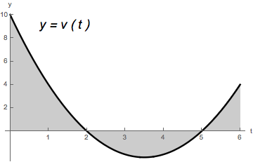

Solve the following word problems:
- (a)
- The velocity function for an object moving along a line east/west is given
by \(v(t) = -t^2 + 4t - 3\) feet per minute.
- (i)
- Find the total displacement the object traveled from \(2\) minutes to \(6\) minutes
(assume east is positive). The object’s total displacement is given by \(\displaystyle \int _2^6 v(t) \d t\). So we compute:\begin{align*} \displaystyle \int _2^6 v(t) \d t &= \displaystyle \int _2^6 (-t^2 + 4t - 3) \d t \\ &= \eval {- \dfrac {1}{3} t^3 + 2t^2 - 3t}_2^6 \\ &= (-72 + 72 - 18) - \left ( - \dfrac {8}{3} + 8 - 6 \right ) \\ &= \dfrac {8}{3} - 20 = - \dfrac {52}{3}. \end{align*}
So the object’s displacement is \(\dfrac {52}{3}\) feet west of its original location.
- (ii)
- Find the total distance the object traveled from \(2\) minutes to \(6\) minutes.
First notice that \(v(t) = -(t^2 - 4t + 3) = -(t-1)(t-3)\). So we can see that\begin{align*} v(t) &> 0 \text { when } 2 \leq t < 3. \\ v(t) &< 0 \text { when } 3 < t \leq 6. \end{align*}
Thus, the total distance that the object traveled from \(2\) minutes to \(6\) minutes is:
\begin{align*} \displaystyle \int _2^6 \left | v(t) \right | \d t &= \displaystyle \int _2^3 \left | v(t) \right | \d t + \displaystyle \int _3^6 \left | v(t) \right | \d t \\ &= \displaystyle \int _2^3 v(t) \d t + \displaystyle \int _3^6 - v(t) \d t \\ &= \displaystyle \int _2^3 (-t^2 + 4t - 3) \d t - \displaystyle \int _3^6 (-t^2 + 4t - 3) \d t \\ &= \eval {- \dfrac {1}{3} t^3 + 2t^2 - 3t}_2^3 - \eval {- \dfrac {1}{3} t^3 + 2t^2 - 3t}_3^6 \\ &= \left ( (-9+18-9) - (- \dfrac {8}{3} + 8 - 6) \right ) - \\ & \left ( (-72+72-18)-(-9+18-9) \right ) \\ &= \left (0 - 2 + \dfrac {8}{3} \right ) - \left ( -18 - 0 \right ) \\ &= 16 + \dfrac {8}{3} = \dfrac {56}{3}. \end{align*}So, the total distance that the object traveled is \(\dfrac {56}{3}\) feet.
- (iii)
- Suppose that the object’s position \(2\) minutes into the trip is \(5\) feet of a placement marker. What is its position (relative to the placement marker) at \(6\) minutes.
- (b)
- Sammy the Snail sets up camp in the median of I-70 and, starting at noon
and ending at 6pm, hikes back and forth along the highway. He starts
his hike at his campsite. His velocity at time \(t\) hours (after noon) is
given by \(v(t)=(t-2)(t-5)\) inches per hour. Find the total distance Sammy travelled on
his hike. The total distance that Sammy travels is \(\displaystyle \int _0^6 \left | v(t) \right | \d t\). The following picture indicates where \(v(t)\) is positive and negative:So we compute:

\begin{align*} \displaystyle \int _0^6 \left | v(t) \right | \d t &= \displaystyle \int _0^2 \left | v(t) \right | \d t + \displaystyle \int _2^5 \left | v(t) \right | \d t + \displaystyle \int _5^6 \left | v(t) \right | \d t \\ &= \displaystyle \int _0^2 v(t) \d t - \displaystyle \int _2^5 v(t) \d t + \displaystyle \int _5^6 v(t) \d t \\ &= \displaystyle \int _0^2 (t^2 - 7t + 10) \d t - \displaystyle \int _2^5 (t^2 - 7t + 10) \d t + \displaystyle \int _5^6 (t^2 - 7t + 10) \d t \\ &= \eval {\dfrac {1}{3}t^3-\dfrac {7}{2}t^2+10t}_0^2-\eval {\dfrac {1}{3}t^3-\dfrac {7}{2}t^2+10t}_2^5+\eval {\dfrac {1}{3}t^3-\dfrac {7}{2}t^2+10t}_5^6 \\ &= \left ( \left (\dfrac {8}{3}-14+20 \right )-0\right )-\left ( \left ( \dfrac {125}{3}-\dfrac {175}{2}+50 \right )-\left ( \dfrac {8}{3}+6 \right ) \right )+ \\ &\left ( \left ( 72-126+60 \right ) - \left ( \dfrac {125}{3} - \dfrac {175}{2} + 50 \right ) \right ) \\ &= -82+175-78=15. \end{align*}So Sammy has traveled a distance of \(15\) inches.